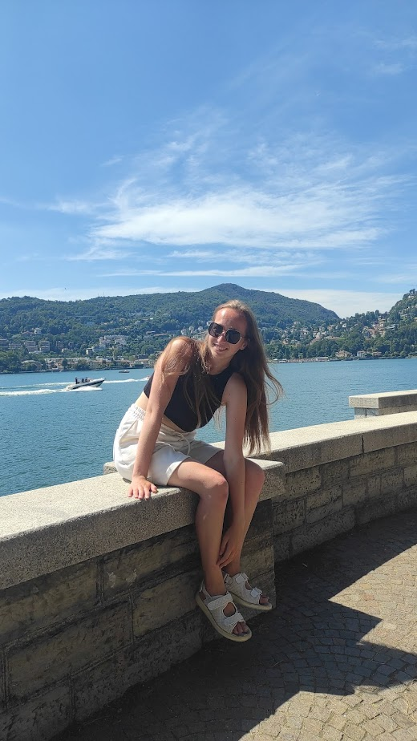

Como
To be in Milan and don't visit Como is a crime! I was about to give up this idea, but told myself "Veronika, you're strong enough".
I didn't have any expectations, so came there for a few hours, ticked place, made a photoset on a lake shore and that's it, happy enough.
Florence
Thank you so much Italian FlixBus for being so punctual! (write please essay about punctuality) As you've already understood it was late. And they don't change timetable, so you're staying as a fool and wondering when and will this bus come at all!
In Florence I wanted only food and to rest a bit. Bought jogurt, bread, some cheese and ham, had no power even to romanticize life (it's a vibe, imagine how done I was!), so ate on a bench.
Then was a looooooong queue to the cathedral, where I got a sunstroke (there was hot as in my worst nightmare), slept at the table leaning against the wall. After 40 mins I put available on hang outs, drank a coffee with one Csurfer and left my backpack in storage room, met another Csurfer to grab some ice cream and spritz.
My host in Florence was really nice, emergency doctor, who visited Ukraine in war period and was interested to learn more words (of course, I provide such lessons during my travels to let people know more about my home place, culture and history) and shared his dinner with me.
On a second day there I visited famous Uffizi Gallery and in the evening was invited to roof party with breathtaking view.
